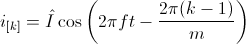
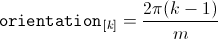

PolyphasePolyphase windings |
|
Information
This information is part of the Modelica Standard Library maintained by the Modelica Association.
Symmetrical three-phase system
Symmetrical three-phases systems of currents (or voltages) consists of three sinusoidal
sine waves with an angular displacement of
 .
.
 ,
,
Electrical three-phase machines have (usually) symmetrical three-phase windings which
excite spatial magnetic potential with a spacial displacement of
 - with respect to the fundamental wave,
see [Laughton02].
Such a symmetrical three-phase system of currents (or voltages) can be represented by
phasors, as depicted in Fig. 1(a).
The associated three-phase winding is depicted in Fig. 2(a). The winding axis are displaced by
- with respect to the fundamental wave,
see [Laughton02].
Such a symmetrical three-phase system of currents (or voltages) can be represented by
phasors, as depicted in Fig. 1(a).
The associated three-phase winding is depicted in Fig. 2(a). The winding axis are displaced by
 :
:

So there is a strong coherence between angular displacement in the time and spatial domain which also applies to polyphase systems.

|

|
Symmetrical polyphase system
In symmetrical polyphase systems odd and even phase numbers have to be distinguished.
Odd number of phases
For a symmetrical polyphase system with  phases the displacement in the time and spatial domain is
phases the displacement in the time and spatial domain is
 ,
as depicted in Fig. 1 and 2.
,
as depicted in Fig. 1 and 2.
Mathematically, this symmetry is expressed in terms of phase currents by:

The orientation of the winding axis of such winding is given by:

Even number of phases
In the current implementation of the FundamentalWave library, phase numbers equal
to the power of two are not supported. However, any other polyphase system with even
an phase number,  ,
can be recursively split into various symmetrical systems with odd phase numbers, as depicted in Fig. 3 and 4.
The displacement between the two symmetrical systems is
,
can be recursively split into various symmetrical systems with odd phase numbers, as depicted in Fig. 3 and 4.
The displacement between the two symmetrical systems is
 .
A function for calculating the symmetricOrientation is available.
.
A function for calculating the symmetricOrientation is available.

|

|
Note
In a fully symmetrical machine, the orientation of the winding axes and the symmetrical currents (or voltages) phasors have different signs; see Fig. 1 and 2 for odd phase numbers and Fig. 3 and 4 for even phase numbers.